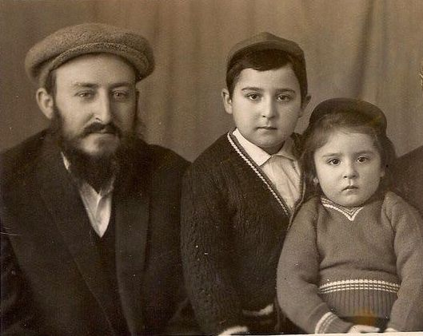

Return to Moscow, Revisiting a Childhood of Mesiras Nefesh
When he was seven, his father gave him a choice, to either attend public school and deal with the weekly non-attendance on Shabbos or to learn underground, without seeing the light of day until further notice. * Rabbi Mordechai (Mottel) Kanelsky chose the second option and learned with one of the elder Chassidim who was a classmate of the Rebbe. * He recently went back to Moscow for the first time in nearly five decades. In speaking with Beis Moshiach, he emotionally told about his parents’ mesirus nefesh in Russia and afterward, in Eretz Yisroel, so that he could fly to the Rebbe. * Why did the Rebbe return the picture that they sent from Russia? What special bracha did he receive from the Rebbe? What debt do he and his wife try to pay back to the Rebbe?

Forty-nine years passed since I left Russia and until a month ago, I did not dare go back. After you read the story of my childhood, you will understand why. Over the years, I received a number of requests to go, including from my brother Meir Simcha, who works on shlichus in Moscow, but I turned them all down.
In recent years, the shluchim in Moscow began bringing large groups to visit the Rebbe and as part of the visit, they would come to our Chabad House for the main evening event of the visit. My wife and I addressed them and a bond developed between us.
Before Yud-Tes Kislev of this year, R’ Shaye Deitsch and R’ Motti Weisberg, organizers of the group, asked me to speak at the central Yud-Tes Kislev farbrengen in Moscow. I asked for the Rebbe’s bracha and after receiving it in the Igros Kodesh in a letter that spoke about a Yud-Tes Kislev farbrengen and the importance of keeping in touch with the people who attend, I understood that the Rebbe wanted me to go.
It wasn’t easy since our annual dinner is on 3 Kislev and on Chanuka we have a huge project of putting up 125 public menoras. But after the clear answer that I opened to, I could not refuse.
I went with my wife, Shterna Sarah, who is also from Samarkand, and the flight to Moscow was very emotional. I remembered the last time I had flown out of Moscow, 49 years earlier, and I shuddered.
In those days, fear of the KGB was so deep that even after we lifted off from Moscow, my father’s face was as white as a Shabbos tablecloth. It was only after we landed in Vienna, that he believed that we had finally left Russia.
ON MY FATHER’S MIND
We arrived in Moscow on Thursday, 14 Kislev, and traveled immediately to the Marina Roscha shul. After Shacharis and reciting the HaGomel blessing, we met with Rabbi Berel Lazar, shliach and chief rabbi of Russia. He was very happy that we had finally come and after a short meeting he suggested we go to the Malachovka neighborhood where I lived in my childhood.
On our way there, I recalled what my father, R’ Nosson, told me, that during the trip from our house to work and from work going home he used to think about my chinuch. The Rebbe brings in the HaYom Yom the instruction from the Rebbe Rashab, that just as it’s a mitzva to put on tefillin every day, so too, it’s an obligation to think about the chinuch of one’s children every day.
Every day, on his way to work, my father would spend the half hour walk thinking about one thing: how to provide me with a Jewish-Chassidish-Lubavitcher chinuch, despite our being in Moscow under communist rule. This required a lot of thought because, 1) who would be willing to endanger his life and freedom to teach a boy in Russia of those days? and 2) if there was someone, how would he pay him? The person would have to leave his job and my father would have to support another family out of his paltry salary.
HACHNASAS ORCHIM OF MY GRANDPARENTS
When we arrived in Malachovka, we were very disappointed to see that the house I had lived in in my youth was closed. We knocked again and again but nobody was at home. I stood there, outside the high fence, three meters high, heard the dogs barking in the yard and saw the house only from the outside.
The outside of the house hadn’t changed. Even the green color of the wall remained, as though fifty years hadn’t passed. It brought me back to the house we lived in together with my grandparents, R’ Yehuda Kulasher and his wife Mrs. Bas-Sheva. They had an open house, and Chassidim who traveled to Eretz Yisroel via Moscow knew they could always stay with us. R’ Berke Chein, for example, hid with us for three years! My grandmother was the daughter of R’ Meir Simcha Chein and her hospitality was famous.
I remember the anonymous Chassid who would come to our house on Shabbos Mevarchim after walking 6-7 kilometers, so he could say T’hillim with a mezuman, together with my father and grandfather. They did not even dream of a minyan … After T’hillim, my grandfather would go to shul but my father and I stayed home. It was too dangerous for us to go to shul which swarmed with informers.
From the locked house we went to the cemetery where I met “old friends,” many Chassidim whom I knew in my childhood, when they would come to my grandparents’ house, whether for a farbrengen or just to say “gut Shabbos” and get some delicacies that my grandmother had prepared.
MY MELAMED – THE REBBE’S CHAVRUSA
The next stop was the Malachovka shul. The old shul, where I went only two times in my childhood, had burned down a few years ago. The new building doesn’t have the atmosphere of the old one, but I was no less moved when I found two Jews who hadn’t yet put on tefillin and I put tefillin on with them.
Then we went to the “Tomchei T’mimim” of Malachovka. I sat with the young students and told them about my Tomchei T’mimim, if my underground learning could be called that.
As I said, my father searched for a melamed for me and finally found an older Chassid by the name of R’ Berel Rickman. He had two special qualities in that he learned in Lubavitch and he was a classmate of the Rebbe in cheder by the melamed R’ Zalman Vilenkin.
When I was five and a half, the melamed started coming to our house. With his white beard he had a unique look, like the Chassidim back in the day in Lubavitch, no different. This was exceedingly rare in Moscow, where even Chassidim were afraid to grow a beard for fear of the consequences.
My father taught me to read when I was three and a half so when the melamed came, we started learning Chumash. We learned for three hours straight and then the melamed said, it’s time for lunch. I was very happy since those three hours of learning were the first three hours of my life that I wasn’t next to my mother and now I could go back to her. But the melamed had other plans and he said: Go get the food from your mother and we will eat together. Fine, if the melamed said so, you don’t play around … I brought the sandwich from my mother and the melamed took out bread that he brought from home and after we washed our hands, we sat down to eat.
At the end of the meal, we began to bentch from a siddur and it was a pleasure to hear the melamed’s Birkas HaMazon. He said each word slowly, you could count the words. I finished before him and followed his saying of each word as I looked in the siddur with the childish idea that if he made a mistake, I could show off my knowledge.
An opportunity soon came. Toward the end of the bentching, at the end of the fourth bracha, he added an entire line that did not appear in the siddur. I was pleased with myself and as soon as he finished the bentching, I pointed at the siddur and said: Excuse me, but you said something that is not written in the siddur.
He smiled at me and asked: What did you hear? I repeated the line that he added, HaRachaman Hu yivorech es Adoneinu Moreinu v’Rabbeinu. He smiled meaningfully and said: That is precisely why I wanted us to eat together, so you would hear that.
Then, for the first time in my life, I heard about the Rebbe. He told me that there is a Rebbe in the world and he is everything to us, but – he added in a low, warning tone – here in Russia, it is forbidden to talk about this. It must remain a secret.
That is how, on the first day of underground learning, I found out that there is someone in charge, the Rebbe!
I learned with this fabulous melamed for three years until he became sick and my grandfather replaced him.
THE NOTEBOOK OF EXCUSES
Friday night, we had the Shabbos meal with R’ Motti Weisberg, together with about seventy people about whom there is much to envy of their sincerity; really, Baalshemske Yidden. During the meal, my wife told about her life of mesirus nefesh in Samarkand:
Her father, R’ Berel Zaltzman, had four daughters and if they all went to one school, when the four of them would not appear on Shabbos, the administration would immediately realize that these were absences for religious reasons. So he registered them in four different schools and every day, he had to travel morning and evening to bring and take them from all over the city.
On Shabbos, of course, she did not go to school. On Sunday, the school was closed. Monday morning, on her way out, she would ask her mother, what’s the excuse this week? Why didn’t I attend school on Shabbos? She had to be careful that she didn’t repeat excuses, so her mother had a notebook in which she wrote down the excuses they used previously: her foot hurt, her head hurt. That’s why Hashem gave us 248 limbs …
She said that one time, the teacher said that each student would say her nationality. She was afraid that if her classmates found out that she was Jewish, they would tease her. She didn’t want to lie but was afraid to say the truth. She decided she would say she was Russian. After all, she was born in Russia.
But when she stood up to say her nationality, the teacher disparagingly said: Shterna, you can sit. You are Jewish!
A second after she sat down, the student who sat behind her hit her hard with a ruler. During recess, the rest of the students ganged up on her and beat her.
CHOOSING A LIFE UNDERGROUND
My wife told her story and I recalled mine:
When I was seven, the problems began. In Russia, you had to start school at age seven. For a Jewish child, this was trouble. In addition to the curriculum that was full of heresy, gentile classmates, and having to sit in class with your head uncovered, the worst problem was having to attend on Shabbos. Going to school on Shabbos was unthinkable.
The first year, my father managed by bribing a doctor and getting a letter from her that said I was sickly and couldn’t go to school. A year later though, she refused to do it again, even after being promised a huge amount of money.
My father discussed the problem with me and said there were two choices. The first possibility, perhaps the lesser of the evils, was to go to school and try not to listen to the teachers’ heresy, not to befriend the gentiles, and the hardest but most important, not to go on Shabbos. What would I do on Monday when the teacher would ask why I was absent on Shabbos? I would need to be very creative and come up with a new excuse each week.
The second possibility was to continue learning at home but to hide in the cellar and not see the light of day until I was past school age, or we left Russia.
I chose the second option.
HOW MY FATHER WANTED TO BE REMEMBERED BY ME
Then, during that difficult time, my father decided to grow a beard! It was a daring decision and even my grandfather was surprised: Now, of all times? When your son is hiding in the house, against the law, why do you need it?
(R’ Mottel chokes up as he repeats his father’s answer.)
I’ll never forget what my father said, with a broken heart:
Yes, now, when I am afraid every moment lest they come and arrest me. I want to make sure that if they arrest me and separate me from my family, that my son remember his father with a beard!
JEWISH AWAKENING
One of the people at the Shabbos meal at the Weisbergs got up and emotionally said that he had heard a lot about anti-Semitic harassment in schools, but he thought it was only in ancient times (i.e., before communism). Now he heard it from a woman of our day and age, he felt he had to do more to add in his Jewish practice.
Another person got up and said that a few years before, when he discovered his Judaism, he wanted to go to shul with some religious item. Since he had heard that a cross is a religious item, he decided to wear a cross to shul, rachmana litzlan, that’s how ignorant he was of Judaism. It’s unbelievable that today, this man has a beard and he made kiddush while wearing a gartel. I cried when I watched him.
The next morning, when my wife left the building where we were staying, she stood near the entrance for she remembered that before Shabbos they had said it was an electronic door. The Russian guard saw her and said: Not to worry; on Shabbos it doesn’t work!
She was bowled over by this. She thought: Fifty years ago, we were afraid of these guards; now they help us keep Shabbos!
She asked the guard how to get to the shul and after getting detailed instructions, she set out. But childhood habits die hard and after walking a while she looked behind her apprehensively lest the guard follow her or had sent someone to catch her.
Shabbos morning we were with R’ Shaye Deitsch who helped us a lot during the visit and arranged our meetings. We had a packed schedule and ten minutes after Shabbos, my wife and I left for the orphanage where we spoke with the girls and boosted their morale.
Sunday morning, after an amazing visit to the new shul built by R’ Sasha Barada, we went to the Bronaya shul of R’ Yitzchok Kogan. There we spoke to 150 female students in various stages of their Jewish journey. Some of them were at our Chabad House two years ago. My wife told them stories of her mother’s mesirus nefesh and then sang Chassidishe songs in Russian. They were very inspired and their mashpia, Rivky Vilensky, asked each of them to make a commitment as a wedding gift for the Rebbe. The most moving was hearing the resolution made by a woman married to a non-Jew who had not agreed to allow her to circumcise her baby boy. She said she would do the bris, no matter what.
DIVINE PROVIDENCE OPENS THE DOORS
From there, we went to eat at a restaurant with my brother Meir Simcha and his family. When we arrived, we met a woman who had visited us two years earlier and had heard our life stories. She was moved to see us in Moscow and as we spoke, my wife told her we had gone to see my parents’ house in Malachovka but it was closed.
The husband of this woman is the head of the Jewish community in Malachovka and she said that with his connections he could definitely open the house for us. Indeed, Tuesday morning, he called and said we could go. When we arrived, he told about the divine providence that enabled him to get access to the house:
He has a good practice of going each morning to the store to buy bread and milk for his mother. That morning, he finished this errand quickly and he had half an hour until davening. He decided to pass the house to locate the owner. He was very disappointed when he rang and rang and nobody answered. He had almost given up when he saw a non-Jew down the street trying to move his car. He stopped near him and asked whether he knew the landlord. The man said yes but refused to give him the landlord’s phone number. So he gave the man his phone number and asked him to call the landlord and tell him that someone needed him for something important.
During davening, his phone is shut off, but afterward, he saw that someone had called him from an unfamiliar number. He returned the call and it was the landlord. After telling him what he wanted, the landlord said that most of the week he lived somewhere else and since he did not feel well, he could not make a special trip to open the house. It was only after he promised to send him a limousine and pay him nicely, that the man agreed to make the special trip.
11 INCHES OF SNOW ON THE SUKKA
As we opened the door to the house, I was flooded by a wave of memories:
Here was the room where my grandfather sat and learned and here was the kitchen where they baked matzos in the early years. I searched for the pech’ka, the oven in which they secretly baked matzos, but the new tenants had made renovations and had a modern stove.
When I was young, they had already stopped baking matzos there since shipments of matzos came from Eretz Yisroel. There was just one catch. The Russians would hold up the matza deliveries in the post office. They released them in time for Pesach Sheini …
Having no choice, we would keep those matzos for the following year. Throughout the year, there were boxes of matzos on a high shelf in my parents’ bedroom, covered with a white sheet.
The new tenants closed up the sukka porch and converted it into a bedroom, but I remembered how my mother would say: If you’ll be a good boy, you’ll be allowed to eat in the sukka.
In Moscow it was freezing on Sukkos and it often snowed. There was a sort of roof over the sukka and sometimes, my father had to clear off 30 centimeters (about 11 inches) of snow so we could open the roof. The sukka reminded me also of those Jews who walked in that cold for two hours, even three, in order to say the blessing on my grandfather’s dalet minim.
CHILDHOOD IN THE CELLAR
The most moving part of the visit was when I got to the door of the cellar. Because of the narrow door and the winding stairs, I couldn’t go down myself. Only my wife went in, but memories of the cellar in which I learned for more than two years, are engraved in my mind for life.
As I said, of the two choices that my father presented, I chose the second one. It was quite scary. Although I was a young boy, I heard the conversations of the adults, about their fears of the government, and it definitely scared me. For me, the fear had practical ramifications. I couldn’t leave the house during daylight hours lest one of the neighbors see me and tattle to the government.
It was hard. I was all of eight years old. All other children my age walked around outside, had friends and games. A normal childhood. I was alone at home for two years, without friends and without games. Nothing!
When my children would say they were bored and had nothing to do, I said: I had many hours of nothing to do and made use of the time by learning Tanya by heart.
Every night, my grandfather would take me for a walk in the yard when all the neighbors had already gone to sleep. I would use that special time with him to be tested on the Tanya I had learned by heart. I learned two lines of Tanya every day and on Shabbos, I reviewed the 12 lines of Tanya I learned during the week. That is how I learned a lot of Tanya by heart.
THEY CAME LOOKING FOR ME
The first year went by without a visit from the government. Then we found out that the authorities had started making surprise visits, checking how many people lived in each house. What we had feared came to pass, and one morning we heard knocking at the door. My father was not at home; only my mother and my younger brother as well as my grandmother. They asked how many people lived in the house and when my mother said three, my parents and my little brother Avrohom, they said they were going to conduct a search.
I wasn’t in the cellar at the time; I was in the house. You can imagine the enormous fear I felt. My grandmother spoke in Yiddish so they would not understand what she was saying, and she told me which room they were in so I could escape from them. In the end, I was able to get to the basement where I hid, so if they came down to look, they wouldn’t find me. That was a very frightening experience and I was only eight and a half.
CODED REQUEST TO THE REBBE
When my father returned from work and heard about the visit, he decided we could not go on like this and had to try to leave Russia. Obviously, as Chassidim, we did not do anything without asking the Rebbe, but how could we send a letter to the Rebbe? If we sent it directly, we would be immediately arrested. It was forbidden to mention the word “Chabad” or “Schneersohn” in Russia in those days.
My father came up with an original plan. He photographed the family and sent the picture to a cousin of my mother, R’ Naftali Hertz Minkowitz, who lived in Crown Heights, and wrote on the picture, “Please show the picture to Grandpa and tell him we want so much to see him.”
After three nerve-wracking months, we received the following answer: “We received the picture and gave it to Grandpa, but he did not say anything.”
What a tremendous disappointment this was. We were waiting for a bracha from the Rebbe and this is what we got instead …
YOU WILL NEVER LEAVE RUSSIA!
If that wasn’t enough, at that time, we found out that you could submit a request to leave just once a year. My father went to submit the papers and according to the letter of the law, he had a chance of getting a visa since his father, who lived in Eretz Yisroel, had sent him a request as per the law of unifying families. According to the law, someone with a relative who lived abroad whose relative asked him to come, if he wanted to leave Mother Russia, could get a visa.
When my father went to the OVIR office to submit the papers, the clerk ripped them up in front of him and nastily said: You will never leave Russia. You’ll die here!
My father returned home and sat and cried. The mood at home was terrible.
LEAVE RUSSIA WITHIN EIGHT DAYS!
At the beginning of Adar 5730/1970, when the mazal of the Jewish people is ascendant, we suddenly received a telegram from OVIR which said that if we wanted to leave Russia, we had to pay a certain amount for my father and mother and leave within eight days.
I cannot describe our tremendous joy at this news. My father did not believe those evil ones that we had eight days, so he looked for the first flight out. We were on a plane after five days, on our way to Vienna and from there to Eretz Yisroel.
We arrived in Eretz Yisroel on a Wednesday night, the night of 11 Adar II 5730. Our first Shabbos there was Shabbos Parshas Zachor. After my father said the HaGomel blessing with great emotion, and after the davening, there was an especially joyous farbrengen.
MESIRUS NEFESH FOR THE TRIP TO THE REBBE
Back to 5779. On Tuesday, 19 Kislev, the main event was held. After I told the story of my childhood in Russia at length, I went on to talk about the difficulties in acclimating in Eretz Yisroel and mainly, about the trip to the Rebbe:
We settled in Nachalat Har Chabad. But despite the great joy over leaving from the strait to the expanse, the expansiveness was not complete. My father had to work very hard for a living but despite the hardships, he did not complain; he thanked Hashem for taking us out from behind the Iron Curtain.
At that time, there was no school in Nachala for children my age and I had to go all the way to Lud where I stayed in the dormitory. I only went home for Shabbos. Perhaps other children would find this hard, but to me it was a luxury after the years I spent in the dark cellar.
Despite the difficult financial situation, my father saved up money until he could live his dream of flying to the Rebbe. We scrimped on everything so that my father could finally go to the Rebbe. When he finally amassed the sum he needed, my mother said: How can you go alone without the child? He sat in a cellar for two years to learn Torah!
My father said he did not have the money and there was nobody from whom he could take a loan. In the end, they decided to sell some belongings that were dear to them, just so I could fly to the Rebbe!
I will never forget this mighty effort that my parents made on my behalf. I can never tell my parents that I finished paying them back. It is a pleasant debt for life!
THE PICTURE IN THE REBBE’S DRAWER
When we got to Crown Heights, we stayed with relatives, the Minkowitz family. To our surprise, R’ Naftali Hertz opened a closet and took out the picture that we asked him to bring to the Rebbe. We were stunned. We asked you to give it to the Rebbe and you wrote that you did so and the Rebbe did not react. So how do you have the picture?
He smiled a mysterious smile and said:
I got the picture during the Aseres Yemei Teshuva 5729/1968 and the first opportunity to submit it to the Rebbe was at the distribution of lekach Erev Yom Kippur. I gave the picture to the Rebbe and said you are my cousins and wanted a bracha to leave Russia. The Rebbe took the picture and said nothing. He went into his room, opened his desk drawer and put the picture inside for safekeeping. Immediately after Yom Kippur I sent you the report that Grandpa had seen the picture but said nothing. That is precisely what happened.
This year, Erev Yom Kippur 5730, I passed by again for lekach and to my surprise, the Rebbe told me to wait a minute. He went into his room, took the picture out of the drawer, and said: “I don’t need the picture anymore.” Three months later, you left Russia!
When I repeated this at the 19 Kislev farbrengen in Russia, I said emotionally: Just like on Pesach night, we say, “If Hashem had not taken our fathers out of Egypt, we and our children and our children’s children would be enslaved to Pharaoh in Egypt,” we also say, if the Rebbe had not taken our fathers out of Egypt, then we and our children would be enslaved in Russia till this day.
HOW DID YOU GET OUT OF RUSSIA?
We had yechidus during Aseres Yemei Teshuva 5731. My father stood near the Rebbe’s desk and I stood on the side near the window. During the first ten minutes of the yechidus, the Rebbe spoke with my father at length about the Jews in Moscow. Then the Rebbe asked my father: How did you manage to leave Russia?
My father told the Rebbe that two months before we left, he had borrowed a large sum of money from good friends and gave it in an envelope to one of the senior clerks at OVIR. He thought that this is why he got the exit visas. The Rebbe smiled and said: Are you sure this is what helped you?
My father said yes, and the Rebbe asked again, with a smile, more strongly: Are you positive that this is what helped you?
Usually, the Rebbe hides himself from us. We never heard the Rebbe say anything like, “I did this miracle.” But here, it was as close to that as possible. The Rebbe stressed two times, are you sure this is what helped you? In other words, R’ Nosson, realize that I took you out, no one else!
THE REBBE’S BLESSING TO ME
When Rabbi Kanelsky stood before the Chassidim in Moscow and told them the last part of the yechidus in which the Rebbe turned to him, his excitement seemed to go through the roof. After you read the bracha that he got from the Rebbe, you will understand why:
After the Rebbe finished talking to my father, he gazed at me and asked what language I spoke. I said I speak Yiddish. The Rebbe asked: Where do you learn and what are you learning?
I said that I learned in Lud, Gemara, perek ha’chovel. The Rebbe asked me some questions on the Gemara and boruch Hashem, I could answer them.
Then the Rebbe said: I heard that you learned Tanya by heart.
I said yes, and the Rebbe said: Start from chapter 4 and he tested me on four lines. Then the Rebbe asked me: Do you have tzitzis? I said yes, and the Rebbe asked: How many?
I said, there are four corners. The Rebbe asked: How many threads are on each corner? I said, eight. The Rebbe asked: How much is four times eight? I said, 32. Then the Rebbe asked: What is 32?
I did not understand the question and could not answer. I looked at my father for help, but he looked back at me with a look that said: Here, before the Rebbe, I cannot speak. I looked back at the Rebbe as though to say: Rebbe, you help me!
The Rebbe looked at me with a broad, loving smile that I can never forget and said: 32 is “lev,” the heart. When you wear tzitzis, you have a good heart, a Jewish heart, a Chassidishe heart. May Hashem help you to have a good heart, a Jewish heart, a Chassidishe heart!
That was my first yechidus with the Rebbe and I think it is impossible to receive a better bracha from the Rebbe.
TRYING TO REPAY THE DEBT
My life story made a deep impression on the people at the 19 Kislev farbrengen and to conclude, I told them that when I met my wife before we were married, one of the important things that preoccupied us was how to repay the Rebbe for taking us out of Russia.
We decided to devote our lives to repaying the Rebbe and to work on his shlichus. We try to draw close Jews who did not have the opportunity to receive the chinuch we got with mesirus nefesh and draw them close to the Rebbe.
We have been doing this for 39 years. We are in touch with more than 30,000 Jews, drawing them close to Judaism, and thus repaying the Rebbe for what we owe him for taking us out of Russia.
Avrohom Rainitz. "Return to Moscow, Revisiting a Childhood of Mesiras Nefesh." Beis Moshiach, no. 1150 (January 17, 2019).